Navigation Graph for
Urban Rail Transit Station
A multi-level, physics-aware pedestrian navigation graph built from IFC Building Information Modelling data, supporting directed pathfinding across fare gates and escalators for pedestrian flow simulation.
End-to-End Pipeline
Data Loading
Geometry
Node Sampling
Graph Building
Routing
Simulation
Each step is decoupled: its outputs are written to disk (CSV, GeoJSON, pickle) so individual steps can be rerun in isolation without reprocessing all predecessors. The entire pipeline from raw IFC to completed routing takes approximately 4–6 minutes on a modern laptop.
Input Data
- 3 raw IFC files (platform F1, concourse F3, entrance F4)
- Preprocessed CSV tables from v2/v3 pipeline
- YAML experiment configuration
Final Outputs
navigation_graph.gpickle— NetworkX graph- Per-entrance inbound / outbound routes (4 gates)
- Static PNG figures + interactive HTML (Plotly)
- ABM simulation results + animated agent visualisation
- 3D axonometric interactive HTML — three floors separated, rotatable
- Route flow difference map — dynamic vs static (3D interactive)
Station Description
The station studied is a multi-level underground urban rail transit hub with three walkable floors modelled in BIM:
| Level | Elevation | Function | Key Elements |
|---|---|---|---|
F4 |
+17.4 m | Street / Entrance level | Entrances A, B, C (open to outside) |
F3 |
+12.1 m | Fare concourse | Entrance D; 20 fare gates (inbound + outbound); escalators to F1/F4 |
F2 |
— | Equipment level | Not walkable — excluded |
F1 |
+0.0 m | Platform level | 48 Platform Screen Doors (PSDs); train boarding zones |
Vertical Connectors
Stairs
- Multiple stair flights (F1↔F3, F3↔F4)
- Bidirectional; speed factor 0.5×
- Modelled as intermediate-node chains at 0.5 m intervals
Escalators (6 units)
- 4 units: F1↔F3 (2 pairs, one up + one down per pair)
- 2 units: F3↔F4 — one up (outbound, near Entrance A/B) + one down (inbound, near Entrance C)
- Directions applied at runtime via
patch_escalator_directions() - Capacity enforced per unit (max 8 agents per escalator)
Elevators
- F1↔F3 direct (no F2 stop)
- Modelled as single weighted ABM-ready edges
- Toggle-able: open/close state per simulation step
Step 0 — Data Loading
src/data_loader.pyThe loading step bridges the upstream preprocessing pipeline (v2/v3, run on the raw IFC files) with the experiment framework. It avoids redundant IFC parsing by reading structured CSV tables produced by the preprocessing pipeline.
Products Loaded
| Key | File | Rows | Description |
|---|---|---|---|
retained_df | retained_elements.csv | 8,119 | All elements passing quality filter |
barrier_df | barriers.csv | — | Fare gate barriers and security scanners |
connector_df | connectors.csv | — | Stairs, escalators, elevators with bboxes |
obstacle_df | obstacles.csv | — | Recalibrated obstacle bounding boxes |
bbox_df | bboxes.csv | — | All element bounding boxes in metres |
Connector Filtering
# Only connectors that have valid spatial data and serve pedestrian
# navigation are passed downstream.
def filter_connectors_for_navigation(connector_df):
"""Keep escalator, elevator, stair, stair_flight subtypes
that have min/max bbox coordinates."""
valid_subtypes = {"stair", "stair_flight", "escalator", "elevator"}
mask = (
connector_df["connector_subtype"].isin(valid_subtypes) &
connector_df["min_x"].notna()
)
return connector_df[mask].copy()📊 Step 0 — Output Figures
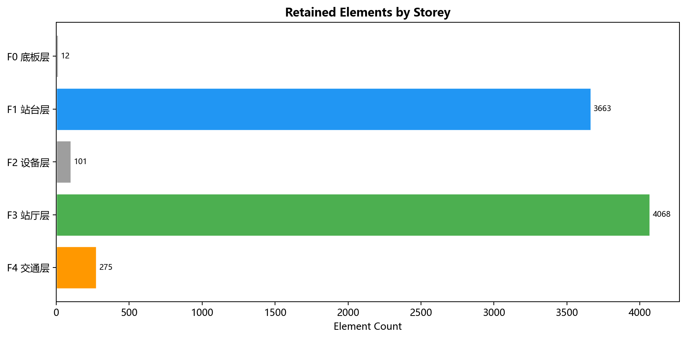

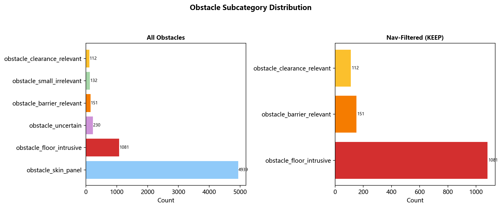
Step 1 — Geometry Extraction
src/geometry_extractor.pyExtracts Shapely 2D/3D geometry for each level: walkable floor polygons, obstacle unions, connector footprints, and gate barrier lines. All coordinates are in metres (ifcopenshell performs automatic mm→m conversion).
Floor Polygon Extraction
Floor geometry is extracted from IfcSlab elements in the raw IFC files.
For each slab, the 3D mesh is computed via ifcopenshell.geom with
USE_WORLD_COORDS enabled, then projected vertically to 2D by retaining
the (x, y) plane of the slab's z-centroid.
Multiple slab polygons per level are merged with shapely.ops.unary_union.
Shape Cache
A module-level dict_shape_cache maps each IFC element's
.id() to its computed (vertices, faces) tuple.
This avoids re-tessellating the same mesh if the element appears in
multiple queries (e.g., a slab referenced both as a floor boundary and
an obstacle boundary).
Obstacle Union
Obstacles (walls, columns, kiosks, ticket machines) are loaded from the
preprocessed obstacle CSV and converted to bounding-box Polygon
objects via polygon_from_bbox().
All obstacle polygons on a level are merged into a single
obstacle union using unary_union.
This single geometry is used in two downstream steps:
- Step 2 — clearance distance query (every candidate node's distance to the union gives its clearance)
- Step 3 — line-of-sight check (edge is rejected if the segment intersects the obstacle union)
Connector Footprint Detection
Connector footprints serve as exclusion zones in node sampling (Step 2) and as geometry sources for chain-node placement (Step 3).
| Type | IFC Source | Geometry Method |
|---|---|---|
| Stairs / stair flights | Preprocessed bbox CSV | Bounding-box polygon; 75 valid elements |
| Escalators | Raw IFC — IfcBuildingElementProxy |
Full mesh tessellation → convex hull projection |
| Elevators | Raw IFC — IfcBuildingElementProxy |
Full mesh tessellation → bounding polygon |
z_min, z_max), enabling
downstream code to automatically infer which two levels it connects without
any manual level-mapping table.
📊 Step 1 — Output Figures
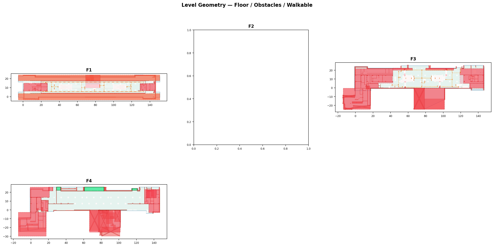
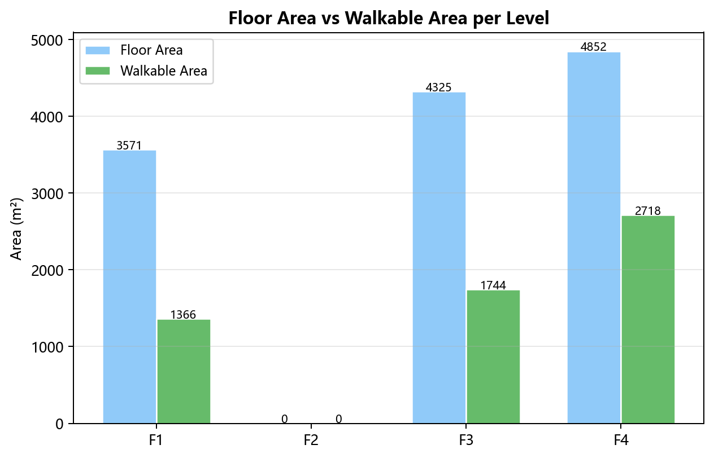

Step 2 — Node Sampling
src/node_sampler.pyA regular grid of candidate navigation nodes is sampled on each walkable level, then filtered by spatial constraints to ensure every retained node represents a physically accessible, human-scale position.
Vectorised Grid Sampling
The sampling algorithm uses fully vectorised NumPy + Shapely 2.0 operations:
1. Generate mesh grid over bounding box: xs = minx + i·Δ, ys = miny + j·Δ (i,j ∈ ℕ) → flattened arrays gx[], gy[] (shape N) 2. Bulk containment: mask ← shapely.contains_xy(floor_polygon, gx, gy) [vectorised O(N)] 3. Connector exclusion: mask &= ¬ shapely.contains_xy(connector_union, gx, gy) 4. Clearance filter: pts ← shapely.points(gx[mask], gy[mask]) dist[] ← shapely.distance(pts, obstacle_union) [vectorised] usable ← dist ≥ min_clearance (0.25 m) 5. Output: retained nodes with attributes {x, y, z, level, clearance}
Performance gain from vectorisation
The v1 implementation used a Python for loop calling
floor_polygon.contains(Point(x,y)) for each candidate.
The v2 vectorised approach using shapely.contains_xy()
on NumPy arrays is approximately 50–100× faster
for grids of tens of thousands of points.
Clearance threshold = 0.25 m
Equals the modelled agent body radius. A node closer than
one body radius to any obstacle edge would result in the agent
centroid clipping the obstacle surface — such nodes are tagged
usable=False and excluded from graph edges in Step 3.
Forced Door Nodes
For every dynamic door (Platform Screen Doors on F1, elevator doors), two nodes are injected at fixed positions relative to the door:
door_platform— node on the platform side of the PSD (48 total)door_track— node on the track / shaft side
These forced nodes guarantee that the graph (Step 3) can create toggle-able edges through each barrier — edges that the ABM simulation can open or close at each timestep without graph rebuilding.
📊 Step 2 — Output Figures
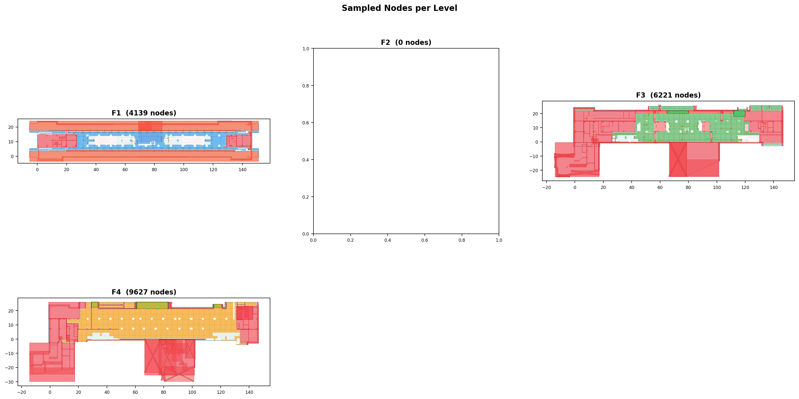


Step 3 — Graph Building
src/graph_builder.py
Assembles a single nx.Graph combining all levels, connector chains,
and directed passage constraints. This is the most computationally intensive step.
Floor Graph — KD-tree Acceleration
Within each level, adjacent grid nodes are connected with 8-connected edges (N, NE, E, SE, S, SW, W, NW), subject to a line-of-sight (LOS) test that rejects any edge whose segment intersects the obstacle union.
scipy.spatial.cKDTree built once over all node (x, y) coordinates,
then queried with tree.query_pairs(r=max_dist) which runs in O(N log N).
For 18,202 nodes the wall-clock build time dropped from ~40 s to ~3 s.
# KD-tree floor graph (v3)
coords = np.array([(n["x"], n["y"]) for n in nodes], dtype=np.float64)
tree = cKDTree(coords)
max_dist = grid_res * math.sqrt(2) * 1.05 # diagonal + tolerance
pairs = tree.query_pairs(r=max_dist, output_type="ndarray")
for i, j in pairs:
# Line-of-sight check using obstacle_union.intersects()
line = LineString([(na["x"], na["y"]), (nb["x"], nb["y"])])
if line.intersects(obstacle_union):
continue
g.add_edge(nid_a, nid_b,
length_2d=d2d, length_3d=d3d,
travel_time=d3d / walking_speed,
edge_type="floor")Connector Chains
Stairs and escalators are not modelled as single edges — they are represented as chains of intermediate nodes spaced at 0.5 m intervals along the vertical path. This enables:
- Realistic travel-time accumulation at each step (instead of a single large jump)
- Per-segment capacity enforcement in the ABM simulation
- Smooth spatial interpolation for visualisation
| Connector Type | Intermediate Nodes | Speed Factor | Directionality |
|---|---|---|---|
| Stair | ⌈Δz / 0.5⌉ − 1 | 0.5 × walking (0.6 m/s) | Bidirectional |
| Escalator | ⌈Δz / 0.5⌉ − 1 | Escalator belt (0.5 m/s) | One-way (up or down) |
| Elevator | 0 (single edge) | dwell + 1.0 m/s vertical | Bidirectional (toggle-able) |
The bottom and top anchor nodes of each connector chain must be connected to the nearest floor node on their respective levels. This is done using a second KD-tree lookup:
# Snap isolated anchor nodes to floor graph
floor_tree = cKDTree(floor_coords)
dist, idx = floor_tree.query([anchor_x, anchor_y], k=1)
if dist < snap_radius:
g.add_edge(anchor_id, floor_ids[idx], edge_type="anchor_snap")Fare Gate Directed Edges
The 20 fare gates on F3 are represented as passage edges between node pairs. Each gate has a mandatory traversal direction:
Inbound Gate
Traversal direction: unpaid side → paid side
Attribute: pass_from_node_type = "fare_gate_unpaid"
A passenger entering the station must approach from the unpaid zone.
Attempting to traverse in reverse returns cost = ∞.
Outbound Gate
Traversal direction: paid side → unpaid side
Attribute: pass_from_node_type = "fare_gate_paid"
A passenger exiting the station must approach from the paid zone.
Optimisations
Stair Deduplication
Multiple IfcStairFlight elements within 3 m of each other
are clustered into a single logical stair unit using a greedy
proximity scan. This prevents the graph from having duplicate
parallel chains for the same physical stair, which would
artificially reduce computed travel times.
ABM-ready Edge Metadata
Every PSD door, elevator door, and elevator transport edge carries extra
attributes (state, open_duration_s,
close_duration_s, queue_capacity) so the
Agent-Based Model simulation can toggle passability at runtime
without rebuilding the graph — the graph is built once and reused
across all simulation runs.
| Metric | v2 (grid-cell hash) | v3 (KD-tree) | Improvement |
|---|---|---|---|
| Floor graph build time | ~40 s | ~3 s | 13× |
| Memory (neighbour index) | ~150 MB | ~8 MB | 19× |
| Anchor snap time | O(N·M) | O(N log M) | asymptotic |
📊 Step 3 — Output Figures

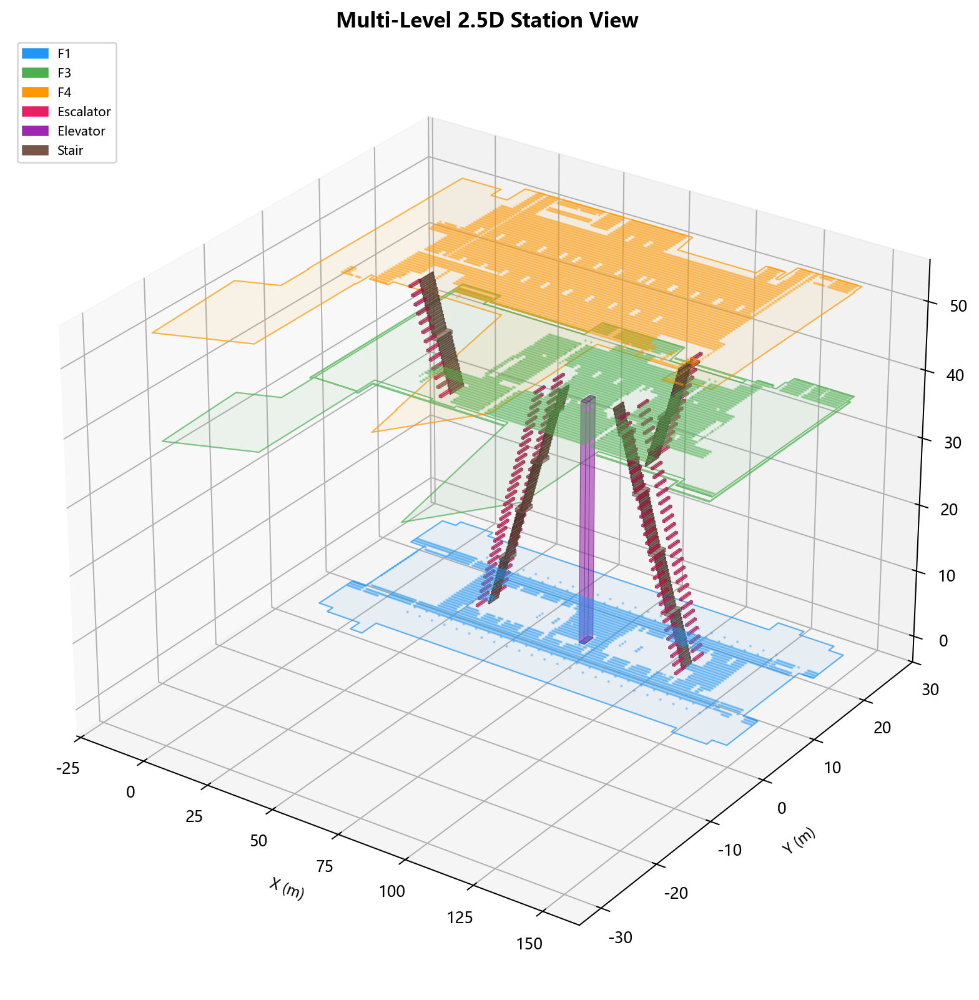


🖱 Interactive 3D Visualisations
Step 4 — Semantic Routing
src/routing.py · scripts/step4_routing.pyAdds semantic meaning to the graph by identifying regions (entrances, fare zones, platform doors), enforcing physical direction constraints on gates and escalators, and computing directed shortest paths per entrance using Dijkstra's algorithm.
Semantic Region Definition
| Region | Node Type Filter | Count | Level |
|---|---|---|---|
| ENTRANCE | node_type == "entrance" | 5 | F4 (A/B/C) and F3 (D/E) |
| PLATFORM (PSD) | node_type == "door_platform" | 48 | F1 |
Five entrance nodes act as origins for inbound trips and destinations for outbound trips. The 48 PSD nodes serve as destinations (inbound) and origins (outbound).
Direction Enforcement
The base nx.Graph uses undirected edges. Direction enforcement is
implemented as a weight function that returns
float('inf') for traversals that violate physical constraints,
effectively making those edges impassable without modifying the graph structure.
def directed_weight(g):
def _weight(u, v, d):
et = d.get("edge_type", "floor")
if et == "fare_gate":
required_from = d.get("pass_from_node_type", "")
from_type = g.nodes[u].get("node_type", "")
if from_type != required_from:
return float("inf") # blocked direction
elif et == "escalator":
esc_dir = d.get("direction", "up")
zu, zv = g.nodes[u].get("z", 0), g.nodes[v].get("z", 0)
if esc_dir == "up" and (zu - zv) > 0.05: return float("inf")
if esc_dir == "down" and (zv - zu) > 0.05: return float("inf")
return float(d.get("travel_time") or d.get("length_3d") or 1.0)
return _weightEscalator Right-Hand Rule
The IFC source assigns direction='up' to all escalators.
The correct assignment is derived from the right-hand rule:
when a passenger faces their direction of travel, the escalator to their
right runs in their direction.
Derivation (F1 ↔ F3 escalator pairs)
Left pair (x ≈ 35 m on F1, x ≈ 66.5 m on F3): travel direction is +x when ascending. The right-hand side of +x is lower y. Therefore: y ≈ 8.9 m → UP, y ≈ 12.5 m → DOWN.
Right pair (x ≈ 118.5 m on F1, x ≈ 86.8 m on F3): travel direction is −x when ascending. The right-hand side of −x is higher y. Therefore: y ≈ 12.5 m → UP, y ≈ 8.9 m → DOWN.
ESCALATOR_DIRECTIONS = {
"esc_2lWC3J0sj8VQujoHqVJF_U": "up", # F1(y≈8.9) → F3(y≈8.9) left pair
"esc_2lWC3J0sj8VQujoHqVJC7c": "down", # F3(y≈12.5) → F1(y≈12.5) left pair
"esc_0xMmxZWHrBZv$oHkFHSzFd": "up", # F1(y≈12.5) → F3(y≈12.5) right pair
"esc_0xMmxZWHrBZv$oHkFHSzFW": "down", # F3(y≈8.9) → F1(y≈8.9) right pair
"esc_18Gic2sdj5_OIgDswc3ESK": "up", # F3 → F4 near Entrance A/B
"esc_18Gic2sdj5_OIgDswc3FF2": "up", # F3 → F4 near Entrance C
}direction='up'.
The patch_escalator_directions(G) function is called once after
loading the graph and corrects 62 escalator-chain edges in-place.
This fix is applied dynamically without rebuilding the graph.
Per-Entrance Dijkstra Pathfinding
For each of the 5 entrance nodes, two directed shortest paths are computed
using Dijkstra's algorithm with the directed_weight
function:
Inbound Path (Entrance → Platform)
- Start at entrance node (F4 or F3)
- Descend to F3 via stairs (F4 entrances only)
- Pass through inbound fare gate (unpaid → paid)
- Take DOWN escalator from F3 to F1
- Walk to nearest PSD node
Outbound Path (Platform → Entrance)
- Start at same PSD node
- Take UP escalator from F1 to F3
- Pass through outbound fare gate (paid → unpaid)
- Ascend to F4 via escalator (F4 entrances only)
- Walk to entrance node
Input: G (navigation graph, undirected) entrance_nodes: list of 5 entrance node IDs platform_nodes: list of 48 PSD node IDs
w ← directed_weight(G) # constructs closure over G results ← [] for each entrance e ∈ entrance_nodes: # Inbound: find nearest PSD reachable with directed constraints dist_map, path_map ← nx.single_source_dijkstra(G, source=e, weight=w) reachable_psds ← {p : p ∈ platform_nodes, dist_map[p] < ∞} nearest_psd ← argmin_{p ∈ reachable_psds} dist_map[p] inbound_path ← path_map[nearest_psd] # Outbound: reverse direction — start from same PSD dist_map_out, path_map_out ← nx.single_source_dijkstra(G, source=nearest_psd, weight=w) outbound_path ← path_map_out[e] # or nearest reachable entrance results.append({entrance: e, inbound: inbound_path, outbound: outbound_path}) return results
Routing Results
| Entrance | Level | Inbound time (s) | Outbound time (s) | Route via |
|---|---|---|---|---|
| Gate D | F3 | ≈ 76 | ≈ 79 | Direct fare gate (F3 concourse) |
| Gate C | F4 | ≈ 125 | ≈ 119 | Stair → inbound gate → escalator |
| Gate A | F4 | ≈ 132 | ≈ 129 | Stair → inbound gate → escalator |
| Gate B | F4 | ≈ 135 | ≈ 132 | Stair → inbound gate → escalator |
📊 Step 4 — Output Figures
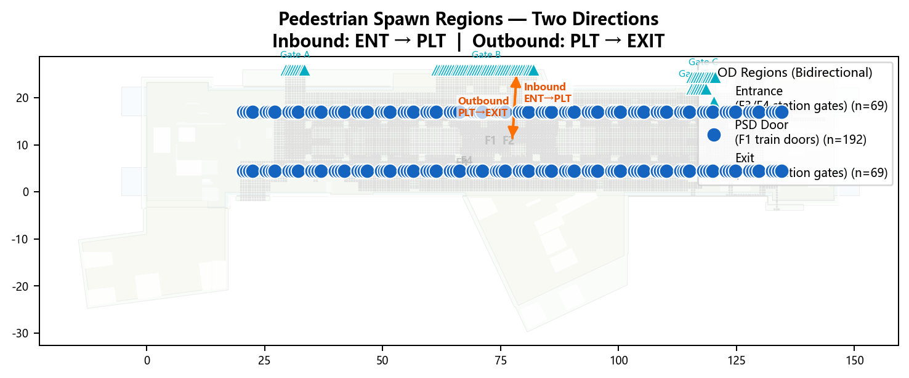
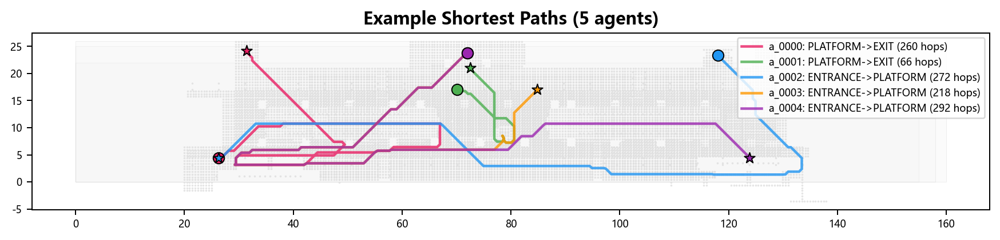
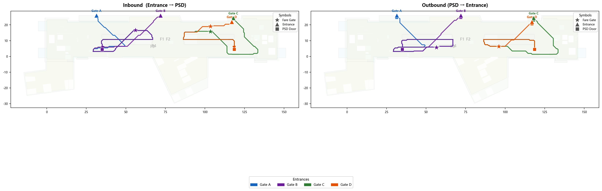
🖱 Interactive Routing Visualisation
Step 5 — Agent-Based Simulation
Step 5 runs an Agent-Based Model (ABM) directly on the navigation graph built in Step 3. Each agent is assigned an origin–destination pair, a walking speed, and a route computed via Dijkstra. The simulation advances in Δt = 0.5 s timesteps and enforces capacity constraints at connectors (stairs, escalators, elevators).
Two interactive 3-D axonometric visualizations are produced — one per scenario. The three floor levels (F1 Platform, F3 Concourse, F4 Transport Hub) are rendered as separated horizontal planes at their true scaled elevations, connected by realistic stair-step meshes, escalator inclines, and elevator wireframe boxes. Agent dots move across all three planes in real time; the scene can be freely rotated, panned, and zoomed with the mouse while playback runs.
ABM Model Design
Agent Types
- Normal (80%) — speed ≈ 1.14–1.26 m/s
- Elderly (20%) — speed ≈ 0.66–0.90 m/s
- 200 agents total, seeded deterministically
- OD split: 50% inbound, 50% outbound
Capacity Gates
- Stair / escalator nodes: max occupancy enforced
- Agents queue at bottleneck, then advance when space opens
- Wait time accumulates; queuing is FIFO per node
- Elevator: single-car capacity, doors modelled as toggles
Dynamic Replanning
- Static scenario: route fixed at spawn time (Dijkstra)
- Dynamic scenario: agents replan when wait ≥ 2 s
- Congestion weight α = 2.0 spreads over 12-hop radius
- Elderly agents never replan (conservative behaviour)
Simulation Scenarios & Results
Three scenarios are evaluated with progressively larger agent populations and routing strategies:
| Scenario | Label | Agents | Arrival rate | Mean travel time | Routing mode |
|---|---|---|---|---|---|
| A – Individual | scenA | 20 | 100% | ~160 s | Static Dijkstra (sparse) |
| B – Static | scenB | 200 | 97.5% | 185.5 s | Fixed Dijkstra at spawn |
| C – Dynamic | scenC | 200 | 98.0% | 197.8 s | Replan when blocked ≥ 2 s |
📊 Step 5 — Core Simulation Figures
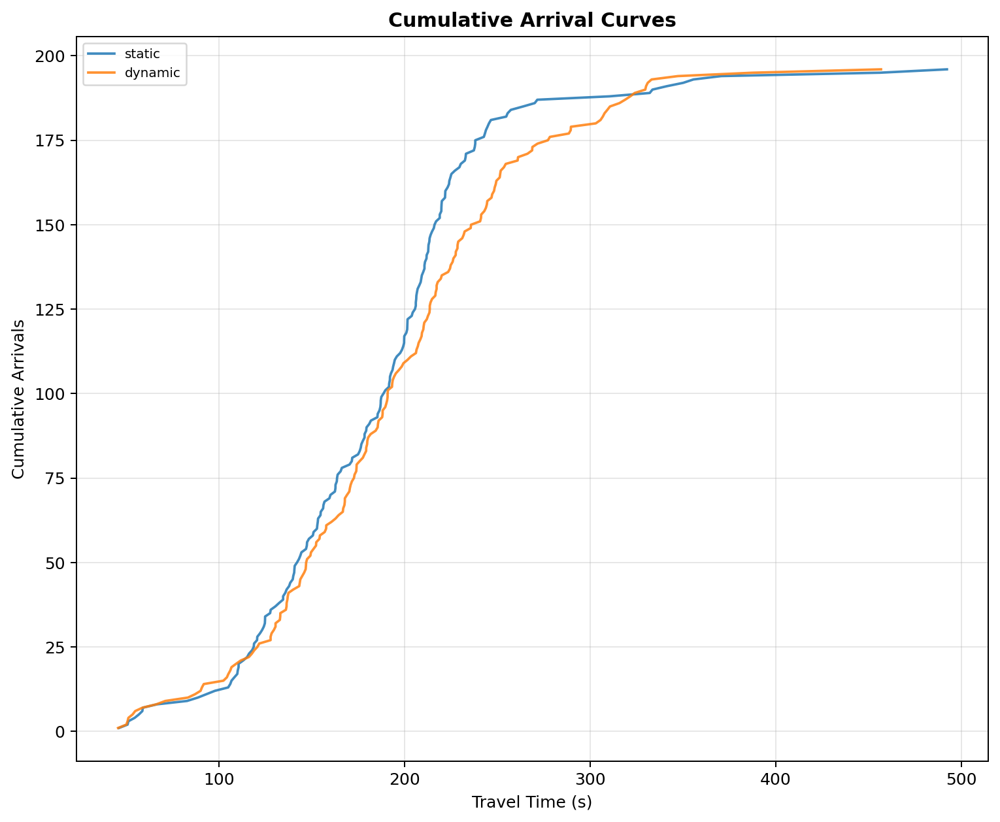
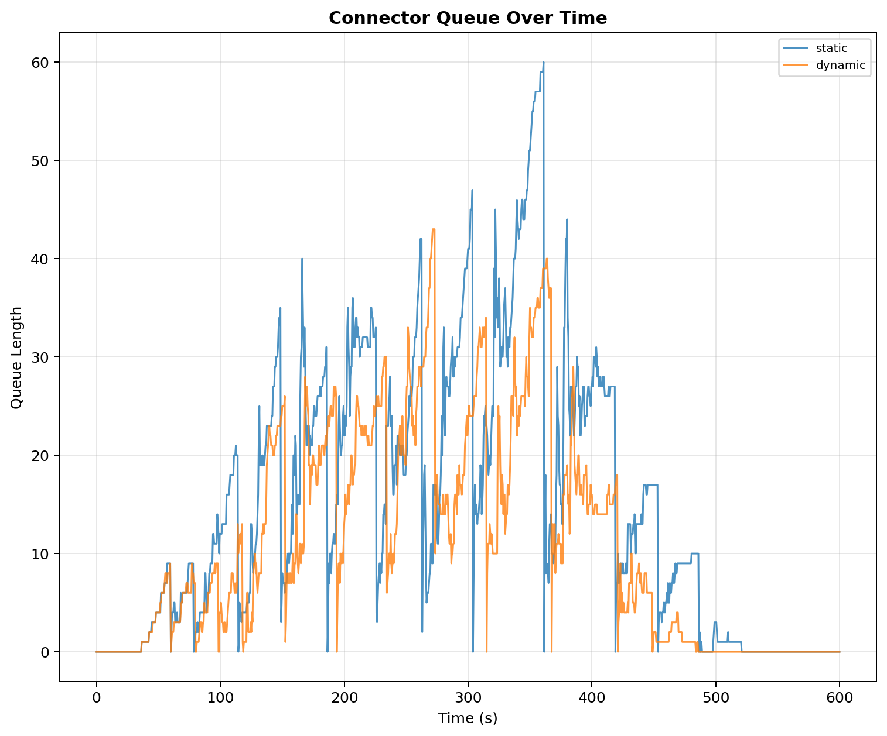
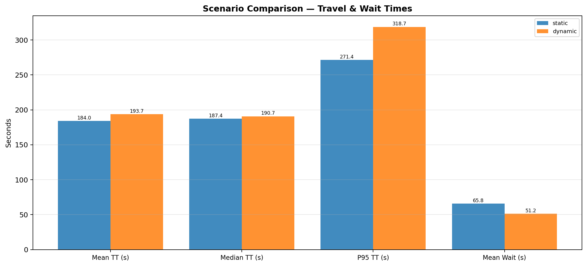

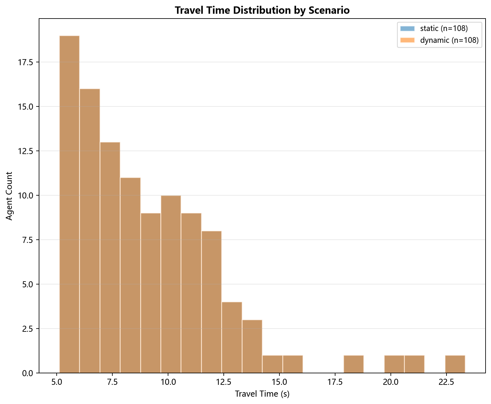
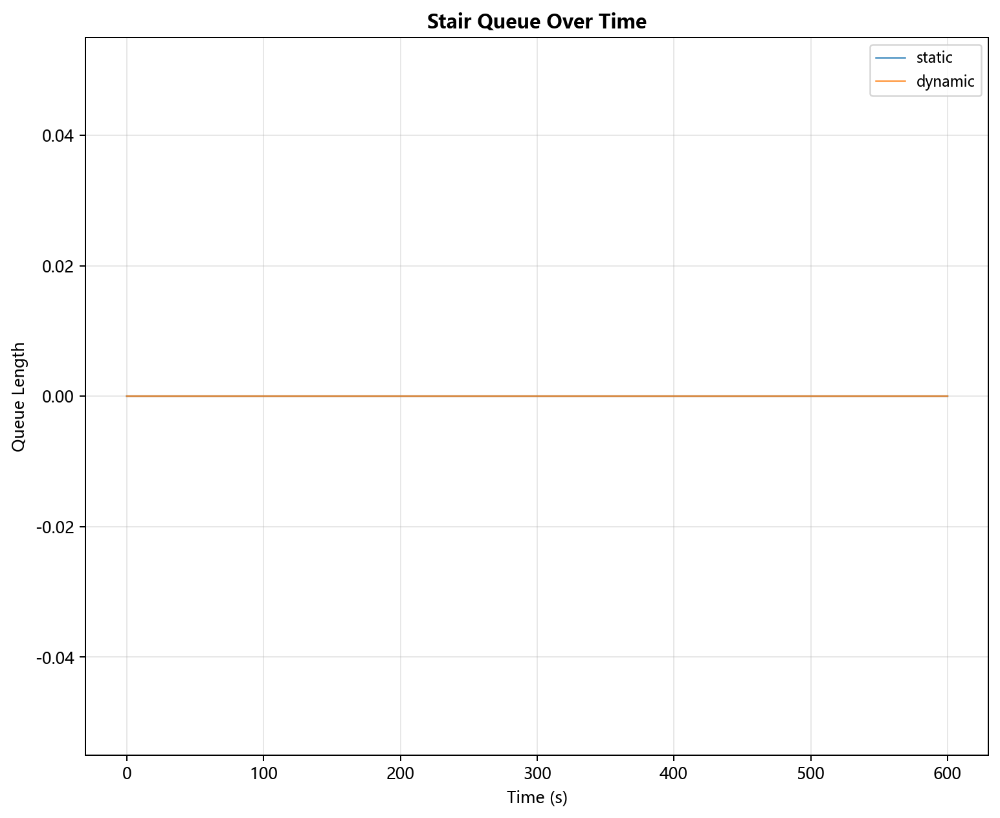
🎞 3D Axonometric Agent Animation (rotatable · all three floors)
Each floor appears as a distinct horizontal plane. Stair treads, escalator inclines and elevator shaft wireframes bridge the levels. Agents travel across all three planes and transit the connectors in real time. Drag to rotate the scene while the animation plays.
2D Top-Down Reference (legacy view)
🔀 Route Flow Difference — Dynamic vs Static Routing
After the simulation, each edge's traversal count is compared between the two scenarios (Δ = dynamic − static). Red edges carry more traffic in the dynamic (replanning) scenario; blue edges carry more in the static scenario. 155 / 200 agents (78 %) triggered at least one replan over 1,996 total replan events.
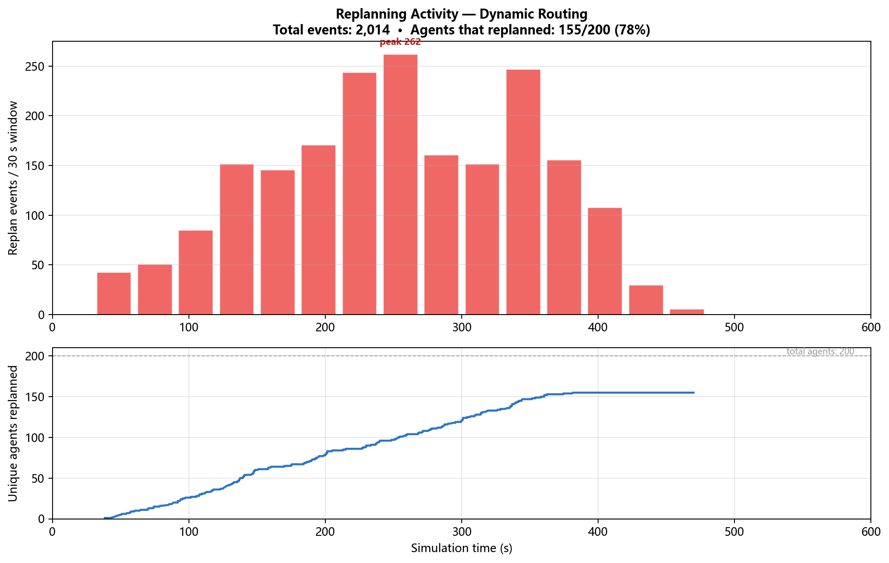
Fig. Replanning activity over simulation time. Top: replan events per 30 s window (peak 262 events near t = 240 s). Bottom: cumulative unique agents that have replanned at least once. 78 % of agents (155/200) eventually deviated from their initial static path (1,996 total replan events).

Fig. Per-level edge flow difference (Δ throughput = dynamic − static). Red = more traversals in dynamic routing; Blue = more traversals in static routing. Strongest redistribution observed on F3 concourse links.
🌐 Interactive 3D Route Flow Difference (rotatable)
Same diverging colour coding as above, rendered on the 3D axonometric floor layout. Use the dropdown to filter to edges that increased or decreased in dynamic routing. Drag to rotate · Scroll to zoom · Legend to toggle.
Results Summary
N=20, sparse
N=200, 184 / 194 s avg
Nsat: 1000 → 1500
Three-Scenario Detail
Scenario A — Individual Pathfinding (N = 20)
Validates the graph's correctness under low-crowd, unconstrained conditions. Each of 20 agents takes its personal shortest Dijkstra path. All agents arrive successfully (100%) and routes are visually coherent, confirming that fare-gate and escalator direction constraints are correctly enforced.
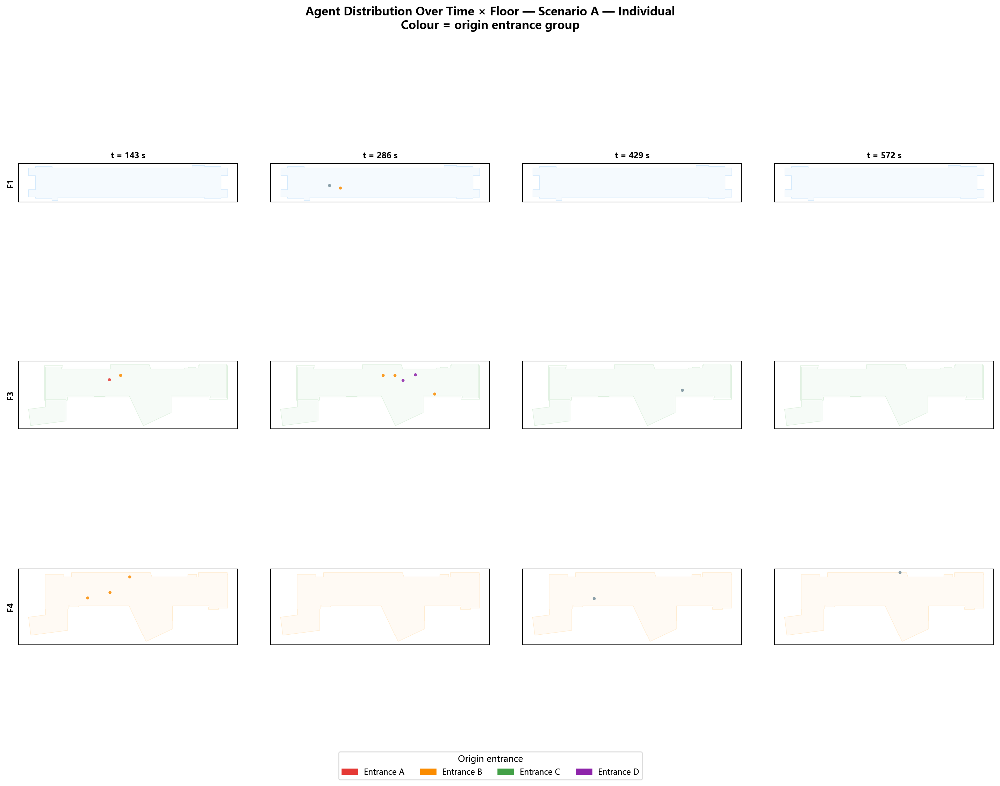

Scenario B — Static Routing (N = 200)
All 200 agents receive their globally-optimal Dijkstra path at spawn time; no replanning. 98.0% arrive within T = 600 s. Mean travel time = 184.0 s. Hot-spots form at the bottleneck connectors (stairs F3→F4, escalators F1→F3) because all agents share the same minimum-cost route.

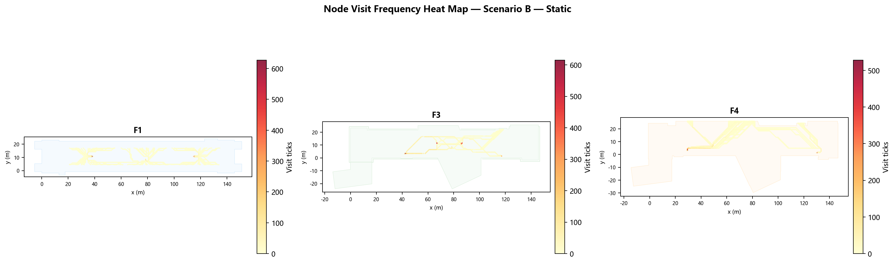
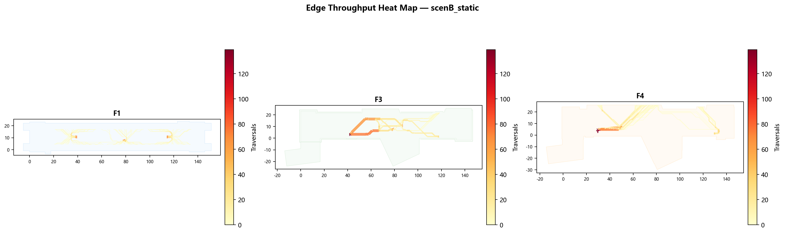
Scenario C — Dynamic Congestion-Aware Routing (N = 200)
Agents replan their remaining route whenever wait time ≥ 2 s. Congestion weights spread via BFS (α = 2.0, 12-hop radius), refreshed every 5 simulation seconds. 78% of agents (155/200) triggered ≥ 1 replan (1,996 total replan events). The flow redistributes across secondary corridors on F3, reducing peak bottleneck load at the cost of slightly longer mean travel time (197.8 s).
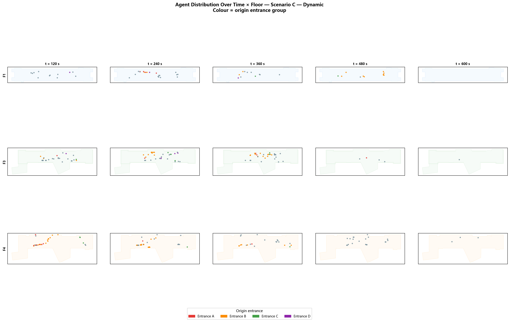
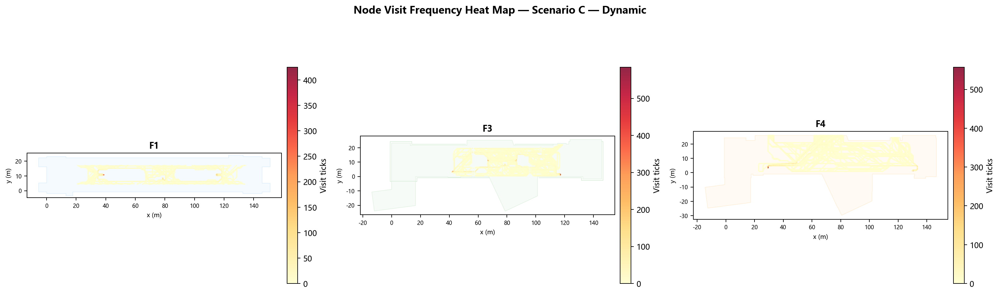


Cross-Scenario Comparison
The evaluation synthesises all three scenarios across five key performance indicators:


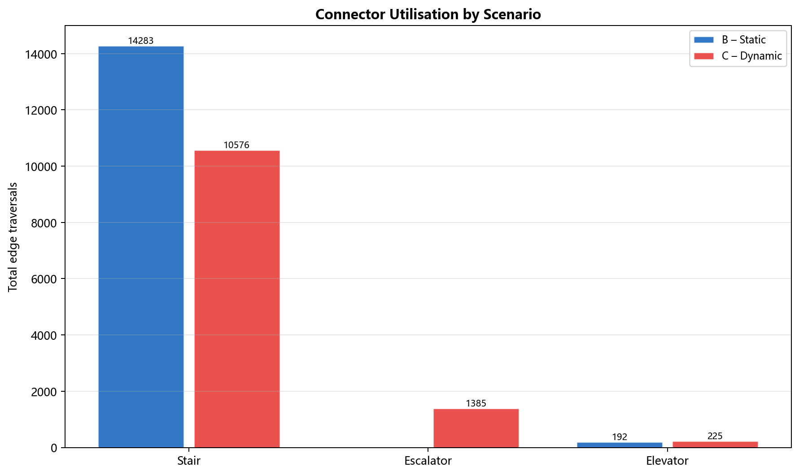
Route Flow Difference — B vs C & A vs B
Edge traversal counts are differenced between pairs of scenarios. Red = more traffic in the second scenario; Blue = more in the first.
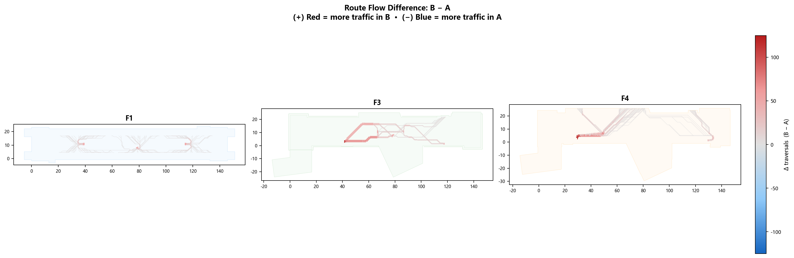

Capacity Analysis — N Sweep
A capacity sweep runs both static and dynamic routing over N = 100 … 2000 agents, measuring the arrival rate (fraction completing their trip within T = 600 s) and mean travel time. The saturation point is defined as the first N where arrival rate drops below 90%.
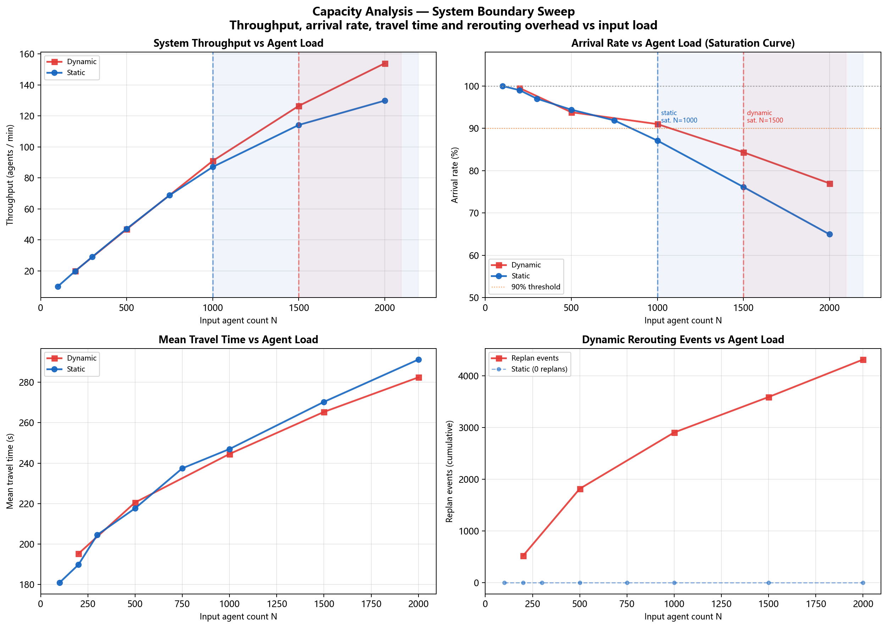
| Routing | Saturation N | Arrival @ N=1000 | Arrival @ N=1500 | Arrival @ N=2000 |
|---|---|---|---|---|
| B – Static | N = 1000 (87.1% < 90%) | 87.1% | 76.1% | 65.0% |
| C – Dynamic | N = 1500 (84.3% < 90%) | 91.0% | 84.3% | 77.0% |
Wheelchair Accessibility Analysis
Three representative agents (different origins, destinations, mobility profiles) are compared with and without the elevator constraint enforced. The graph's toggle-able elevator edges allow simulating elevator outage without rebuilding the graph.

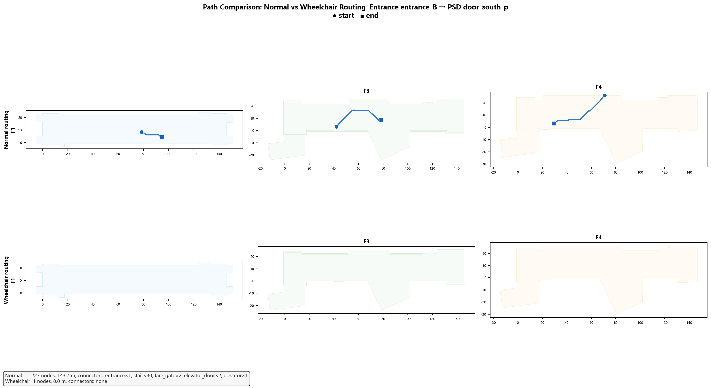
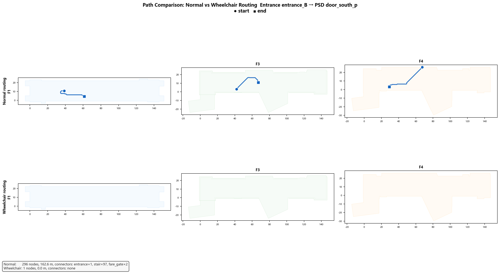
Limitations & Future Work
Current Limitations
- Static graph: obstacles / fare gates cannot change geometry between runs
- 2.5D model: no full 3D agent-obstacle collision physics
- Platform crowd modelling is simplified (uniform PSD distribution)
- Capacity sweep uses reduced replan cap (4/step) for speed — real behaviour may differ
✓ Fixed in v2
- Escalator capacity now enforced per individual unit (connector_id keyed), not globally across all 6 units
- F4 → F3 inbound route now uses
esc_18Gic2sdj5_OIgDswc3FF2(direction=down) — passengers near Entrance C no longer forced onto stairs only patch_escalator_directions()now called insiderun_simulation()so all runs apply correct directions automatically
Planned Extensions
- Real passenger count data for OD matrix calibration
- Social-force model for crowd pressure at bottlenecks
- Convert to
nx.DiGraphfor even faster directed queries - Extend to full BIM → simulation automation pipeline
- Time-varying agent arrival rates (rush-hour profile)
- Multi-entrance simultaneous capacity stress test
Key Engineering Trade-offs
| Decision | Chosen Approach | Alternative | Reason |
|---|---|---|---|
| Graph type | nx.Graph + weight function |
nx.DiGraph |
Avoids graph rebuild; one undirected graph serves all routing scenarios |
| Obstacle representation | Polygon union (Shapely) | Raster grid / voxel | Exact geometry; compact; natural LOS test |
| Node grid resolution | 0.5 m | 1.0 m or adaptive | Resolves narrowest passages (fare gate 0.43 m) |
| Neighbour search | cKDTree | Grid-cell hash | 13× faster, 19× less memory, standard library |
| Direction enforcement | Weight function → ∞ | Edge removal / DiGraph | Non-destructive; same graph for inbound + outbound queries |
| Dijkstra speed (dynamic) | Pre-baked weight dict (O(1) lookup) | Python callable weight function | 9811× speedup; enables N=2000 runs in minutes instead of hours |
| Escalator capacity gating | Per-unit counter keyed by connector_id |
Global counter across all escalators | Prevents false blocking: one saturated unit no longer blocks all 5 others |
| Escalator direction (F3↔F4) | 1× up (outbound A/B) + 1× down (inbound C); patch called at runtime | Both units up-only (IFC default) | Matches real station; inbound passengers near Entrance C can use escalator, not stairs only |